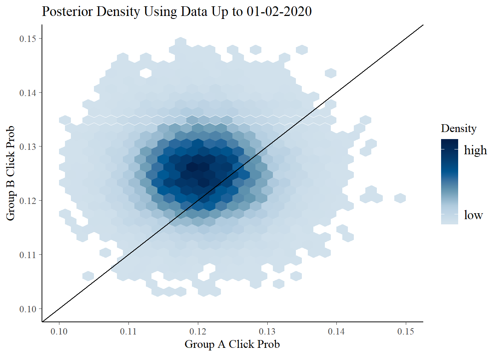
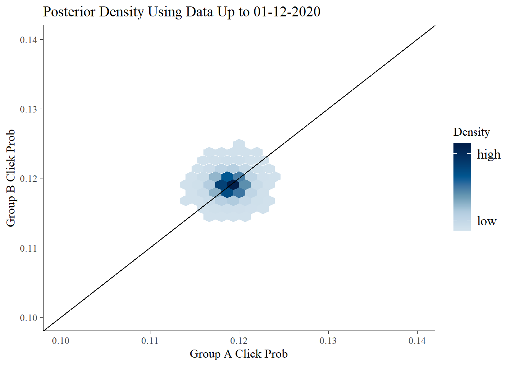
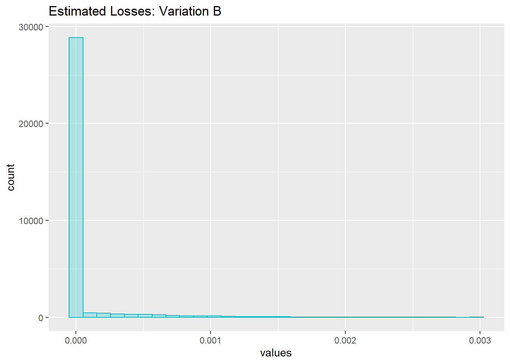
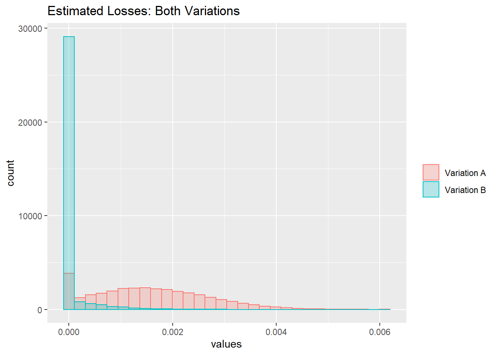

The Bayesian A/B Test
Introduction
The A/B test is a well known and frequently implemented form of experimental design. A/B testing is really a special case of statistical hypothesis testing but because of its rise in popularity among businesses in the technology sector, the A/B test has emerged as a standalone subject of study in many statistics and data science practices. The classic A/B test example, and the one I’ll refer to for this tutorial, is set up as follows: “An e-commerce website is trying to increase the rate at which users click the ‘Add to Cart’ button on one of their frequently visited webpages. The company believes that one way they can acheive this by changing the color of the button from blue to purple. In the following week, visitors of the webpage are randomly given one of the two color variations and the rates at which customers click the ‘Add to Cart’ button are recorded.”

In the above experimental set up we have two groups (called group A and group B, hence the name). The statistician or data scientist is then responsible for taking the click rates in each group, determining if the two groups are statistically different, and, most importantly, determining if the company will make more money by switching to the new webpage desgn. Anyone with some statistical education under their belt will notice that a two sample test for proportions is a good starting point for the above example. The A/B test has been extended and modified to meet a variety situations and I can probably write an entirely separate report on the experimental design itself. I’m going to focus on the analysis of the experimental data here, but a casual introduction to A/B testing can be found at the wikipedia page.
Although many people swear by the A/B test as the be-all and end-all for driving business decisions and testing new features of applications, I personally think A/B tests have flaws that need to be improved. One gripe I have is that they are inefficient. They only test one variation of one aspect of a webpage, but a very quick fix to this issue is to design and analyze a proper factorial experiment (page 182, Montgomery). As a Bayesian statistician I also have some issues with solely relying on null hypothesis testing and p-values to make decisions. Without proper training those analyzing A/B data can fall victim to p-hacking, significance chasing, and making multiple comparisons. Those issues can cause one to coclude that one group is significantly better than the other when in reality, the opposite is true. Lastly, using null hypothesis testing to analyze A/B data is a poor way to quantify the risks of switching from one group to another. Hypothesis tests carry the risk of making a type I error and it’s nearly impossible to tell when such an error has been made until it’s too late. Because of this, we need a way to quantify the risk involved in switching from one variation to another after the A/B test concludes.
I’m confident that a Bayesian approach to analyzing A/B data can remedy some of the issues mentioned above. Through the use of probability theory and Bayesian decision theory, we can find the probability that users will choose variation B over variation A, quantify the risk of changing from variation A to variation B, and dig deeper into the data than we would with a traditional hypothesis test. The goal of this report is to therefore establish a flexible framework for analyzing A/B test data using Bayesian methods. I’ll be using the R programming language for the main analysis and the STAN programming language for developing the statistical models. STAN is widely used by Bayesians and it integrates well with R and RStudio. A basic grasp Bayesian methods is necessary to follow along with this tutorial. A good data science focused introduction can be found here. Lastly, before we get going, let’s load in all of the R libraries that we’ll be using in this walkthrough.
library(ggplot2)
library(rstan)
library(bayesplot) # Must also have the 'hexbin' package installedThe Statistical Model
I’m a proponent of building a statistical model before we even look at any data we may have collected. This ensures that we are starting the analysis from a strong theoretical foundation and helps us avoid the risk of overfitting a model to our current data. For this analysis, we’ll treat group A as the contol group. Webpage users in group A will see the current version of the webpage we wish to potentially change. Group B will be the treatment group and users will recieve the new version of the website. We’ll measure the rate at which people click the “Add to Cart” button. If a user clicks the button, we’ll record a value of 1 and if a user fails to click the button before moving to a different webpage, we’ll record a value of 0. A family of probability distributions that models the sum of binary data is given by \[ y_i \sim Binomial(n_i,\theta_i)\] Where \(i\) is the index for each group, \(y_i\) is the total number of clicks in each group, \(n_i\) is the total number of webpage users in each group, and \(\theta_i\) is the true probability that any one user will click the “Add to Cart” button. Therefore, we want to determine if the \(\theta_A = \theta_B\) or if the probabilities are different for each goup. Using a Bayesian approach, we’ll calculate a joint posterior distribution for the unknown proabilities. This is acheived as follows \[p(\theta_A,\theta_B|y_A,y_B) \propto p(\theta_A,\theta_B)Binomial(y_A,\theta_A)Binomial(y_B,\theta_B).\] Where \(p(\theta_A,\theta_B)\) is some joint prior distribution for the two unknown probability parameters. This model assumes that the random quantities within each group are exchangeable and that each group is also exchangeable. This will need to be justified by the statistician before fitting the model to data. I’ve programmed this model into a STAN file as follows. The code is also available in the file “ABmodel.stan”.
// This code is used as the framework for fitting a model for binomial A/B tests
// The traditional A/B test uses a control and one variate, but this model is
// flexible enough to accomodate other scenarios
// The input data is a vector of integer 'y' values of length 'K'.
// We need a vector of total number of observations 'N' of length 'K'
// 'K' is the number of groups in the A/B test
data {
int<lower=0> K;
int<lower=0> N[K];
int<lower=0> y[K];
}
// Define the parameters for each group
parameters {
real<lower=0,upper=1> theta[K];
}
// We are going to model 'y' in each group as binomial
// We assign a beta prior to the parameters that favors lower rates. This can be modified
model {
for (i in 1:K){
theta[i] ~ beta(0.75,1);
}
for (i in 1:K){
y[i] ~ binomial(N[i],theta[i]);
}
}Fitting Data to the Model
Now that the model is built, we can fit it to some data we’ve collected from a suitable A/B test. Unfortunately, all the A/B data I’ve worked with is proprietary, so for this walkthrough I’ve simulated some data which can be found in the file “sim_data.csv” and the first 6 rows can be seen below.
input.df <- read.csv("sim_data.csv", header = TRUE,
colClasses = c('Date', 'integer', 'integer', 'integer', 'integer', 'numeric', 'numeric'))
head(input.df)## time AClick BClick ATotal BTotal APct BPct
## 1 2020-01-02 348 362 2889 2894 0.1204569 0.1250864
## 2 2020-01-03 1110 1122 9599 9578 0.1156370 0.1171435
## 3 2020-01-04 1883 1932 16228 16233 0.1160340 0.1190168
## 4 2020-01-05 2641 2733 22814 22771 0.1157623 0.1200211
## 5 2020-01-06 3489 3511 29658 29455 0.1176411 0.1191988
## 6 2020-01-07 4265 4316 36361 36133 0.1172960 0.1194476The typical A/B test has a predetrmined start date and duration. In this dataset we are logging the running total users that are presented webpages A and B as well as the running number of individuals that click the “Add to Cart” button on each page. A plot of the click rates over time is shown below. All code for the plots in this tutorial can be found in the file “ABAnalysis.R”.
There is an extremely slight difference between the two groups at the conclusion of the test. To quantify this difference, we fit the STAN model to our data. I’ll fit 3 separate models to the begginning, middle, and end dates of our A/B test. To define an then fit a model using a STAN file, we use the following code.
# Define the model from file
ABmodel <- stan_model('ABmodel.stan')
# Fit a model to the 01-02-2020 data
beg.fit <- sampling(ABmodel,
data = list(K = 2,
N = as.numeric(input.df[1,4:5]),
y = as.numeric(input.df[1,2:3])),
warmup = 2000,
iter = 10000)
# Fit a model to the data up to 01-12-2020
mid.fit <- sampling(ABmodel,
data = list(K = 2,
N = as.numeric(input.df[11,4:5]),
y = as.numeric(input.df[11,2:3])),
warmup = 2000,
iter = 10000)
# Fit a model to the data up to 01-24-2020
end.fit <- sampling(ABmodel,
data = list(K = 2,
N = as.numeric(input.df[23,4:5]),
y = as.numeric(input.df[23,2:3])),
warmup = 2000,
iter = 10000)The fitted models are stored as R objects and we can view and access compenents in the usual way. The models are, quite literally, joint posterior distributions for the click rate probabilities for each group. STAN operates by randomly sampling values from the theoretical posterior distribution and so the outputs of a STAN fit are large random samples that very closely approximate the true posterior distribution for our unknown click probabilities. Below is a quick look at the outputs for the model fitted to the January 2nd data as well as posterior density plots of the three fitted models.
beg.fit## Inference for Stan model: ABmodel.
## 4 chains, each with iter=10000; warmup=2000; thin=1;
## post-warmup draws per chain=8000, total post-warmup draws=32000.
##
## mean se_mean sd 2.5% 25% 50% 75% 97.5% n_eff Rhat
## theta[1] 0.12 0.00 0.01 0.11 0.12 0.12 0.12 0.13 24101 1
## theta[2] 0.13 0.00 0.01 0.11 0.12 0.13 0.13 0.14 24584 1
## lp__ -2157.94 0.01 1.01 -2160.69 -2158.32 -2157.64 -2157.23 -2156.96 13872 1
##
## Samples were drawn using NUTS(diag_e) at Tue Dec 31 11:48:47 2019.
## For each parameter, n_eff is a crude measure of effective sample size,
## and Rhat is the potential scale reduction factor on split chains (at
## convergence, Rhat=1).
Naturally, the joint posterior distribution for the two parameters has less variance as we accumulate more data over time. The diagonal line on the plots represents the case where \(\theta_A=\theta_B\) and a distribution above (below) this line is evidence that group A (group B) has higher click rates. Towards the end of the study, it appears that group B (the treatment group) has the slight edge, but these results are ambiguous at best. We might be tempted to take a risk a switch the webpage design to variation B, but before we do we’ll utilize a loss function to quantify the risk of switching to the new design.
Making Decisions Using a Loss Function
Because the posterior distribution is overlapping the diagonal line in the previous plots, there is a non-zero probability that we will make a mistake when deciding to switch from the old webpage design to the new one. We can figure out the approximate probability using the following code.
posterior.mat <- as.matrix(end.fit)
# Find the percent of click rates that are larger in the control group
sum(posterior.mat[,1]>posterior.mat[,2])/nrow(posterior.mat)## [1] 0.1079688We see that if we choose to switch from design A to design B, there is about an 11% chance that we are wrong. This might be too high of a risk for many people to consider switching, but it’s not the end of the story. The problem with quantifying the switching risk in this manner is that it treats all differences in the group click rates as equal. For example, suppose that in reality \(\theta_A-\theta_B = 0.0001\) (i.e. theres a very small difference in favor of variation A). If we choose to adopt variation B based on the previous analysis, the mistake we make is not really a problem. On the other hand, suppose that \(\theta_A-\theta_B = 0.1\). Choosing to switch to variation B is a far more severe mistake in this case, because group A was significantly more favorable in reality. A class of functions called loss functions are used to assign penalties to increasing larger errors. If you’ve ever fit a regression model to data using least squares, you’ve fit a line of best fit by minimizing a quadratic loss function. The loss function I’ll use comes from Stucchio (2015). The loss function for staying with variation A is \[L(\theta_A, \theta_B, A) = \max(\theta_B-\theta_A, 0).\] Similarly, if we choose variation B, the loss function is \[L(\theta_A, \theta_B, B) = \max(\theta_A-\theta_B, 0).\] Along with having some nice properties (I’ll include Stucchio’s paper in the repository), this loss functino has the advantage that the output values are on the same scale as the click probabilities. That is, the loss function tells us the percentage of users that we would lose given that we made the wrong decision. We can code this loss function into R and then apply it to the matrix of posterior observations we defined above
lossA <- function(theta.vec){
if (theta.vec[2]-theta.vec[1] > 0) return(theta.vec[2]-theta.vec[1])
else return(0)
}
lossB <- function(theta.vec){
if (theta.vec[1]-theta.vec[2] > 0) return(theta.vec[1]-theta.vec[2])
else return(0)
}
loss.dist.B <- apply(posterior.mat[,1:2], 1, lossB)
loss.dist.A <- apply(posterior.mat[,1:2], 1, lossA)Since we are using random inputs, the output values of the loss functions are also random quantities. The distributions of the losses are shown below.

We can also calculate the expected loss for each variation.
mean(loss.dist.A)## [1] 0.001537183mean(loss.dist.B)## [1] 6.223857e-05Variation B is the clear winner here. Even though there’s an 11% chance that we’re making a mistake by switching to group B, the expected loss is so small that making such a mistake isn’t really an issue. Another great advantage of this technique is that we can set an expected loss threshold before we conduct the A/B test. The test is then run until one of the two groups falls below the threshold. This ensures that we collect enough data to make an accurate and informed decision, but also ensures that we don’t waste time and resources. Finally, we’ll conclude that the e-commerce website is better off if they change the color of the “Add to Cart” button.
Conclusion
A Bayesian approach to A/B testing is a fantastic option for companies and individuals wishing to get more out of their web applications. Although Bayesian statistics has it’s own problems, qantifying and accounting for potential loss when switching groups is a huge advantage. Furthermore, STAN is a programming language designed for effecient model building. The ability to program a model and save it for later allows us to use all the techniques mentioned in this report on many different datasets. In this regard, a Bayesian model is far more parsimonious than the usual A/B hypothesis test.